Angaité language documentation
My project on Angaité focused on documenting vocabulary and developing a qualitative analysis of the consonant inventory in collaboration with native speakers.
In 2019, I spent the summer in Paraguay studying Paraguayan Guaraní and conducting pilot fieldwork in the community of La Patria, where the Angaité [aqt] language is spoken. My study of Guaraní was funded by a Foreign Languages and Area Studies scholarship, through the UT Austin LLILAS Benson Latin American Studies and Collections. I studied in Asunción for six weeks at the Idiomas en Paraguay Institute. Courses met weekdays for six hours a day; I spent the remainder of my time in Asunción preparing for fieldwork and exploring the city and surrounding areas.
Angaité is a very endangered language; it has perhaps 500 remaining speakers, most of whom are elderly, and children no longer learn the language. The main community in which Angaité is now spoken is called La Patria, a collection of small villages in the Paraguayan Chaco, southeast of Filadelfia (the largest city in Western Paraguay) and about 80 km off the Ruta Transchaco. My arrival in La Patria was complicated by the weather--I traveled there with members of the Secretaría de Política Lingüística (SPL) who had graciously agreed to take me and my supplies. It began to rain before we arrived at the community, and the roads became impassible, so the SPL employees turned back, leaving me with a family at a ranch dispensary about 12 km from La Patria. I remained with this family for approximately a week before the roads cleared and I was able to travel the remainder of the distance. Leaving La Patria a month later was simillarly complicated, requiring travel via motorcycle, hitchhiking, and asking the police stationed on the Ruta Transchaco for assistance in flagging down another hitchhiker to take me to Filadelfia.
 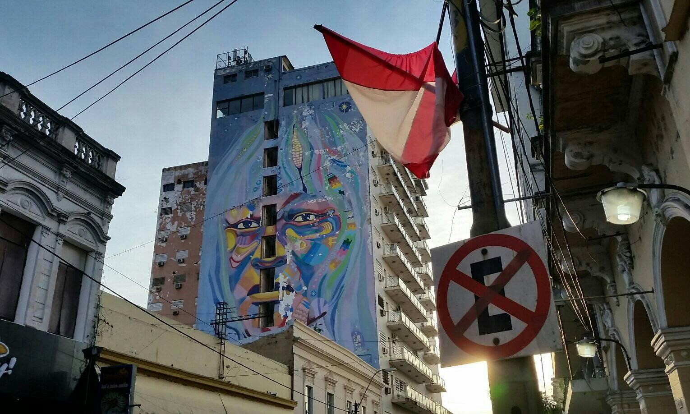
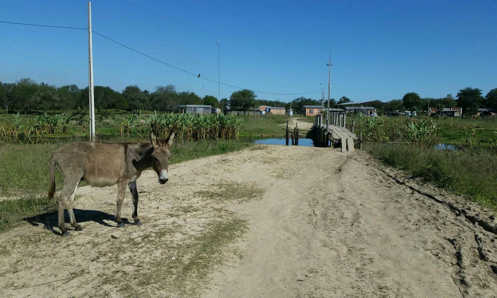
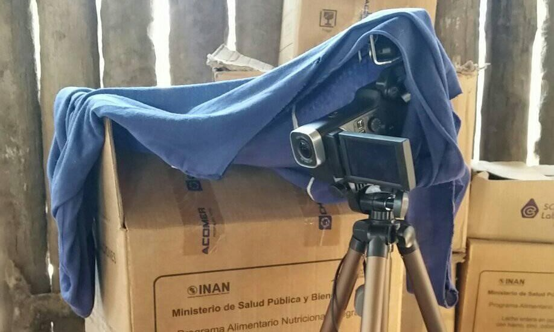
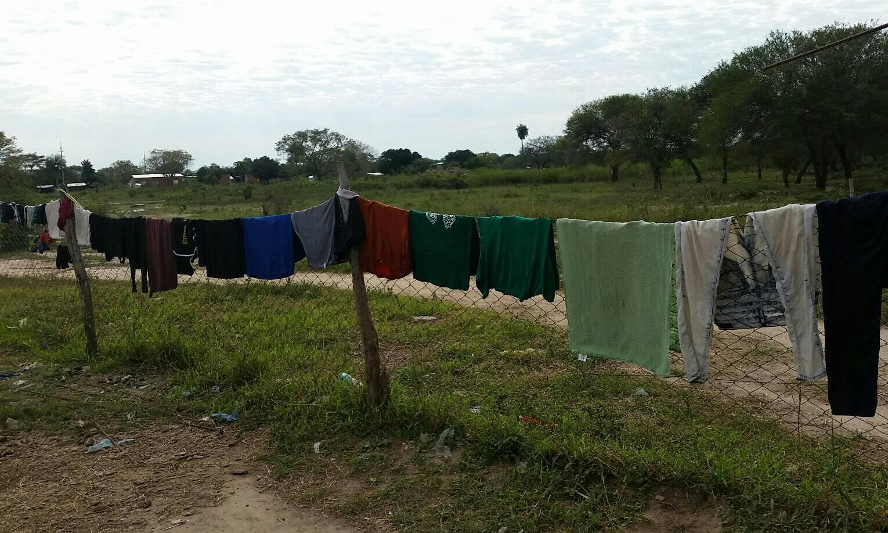
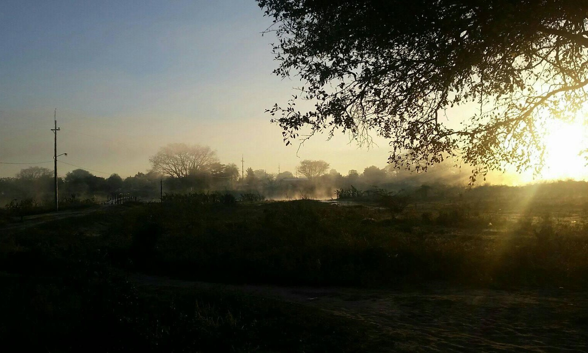
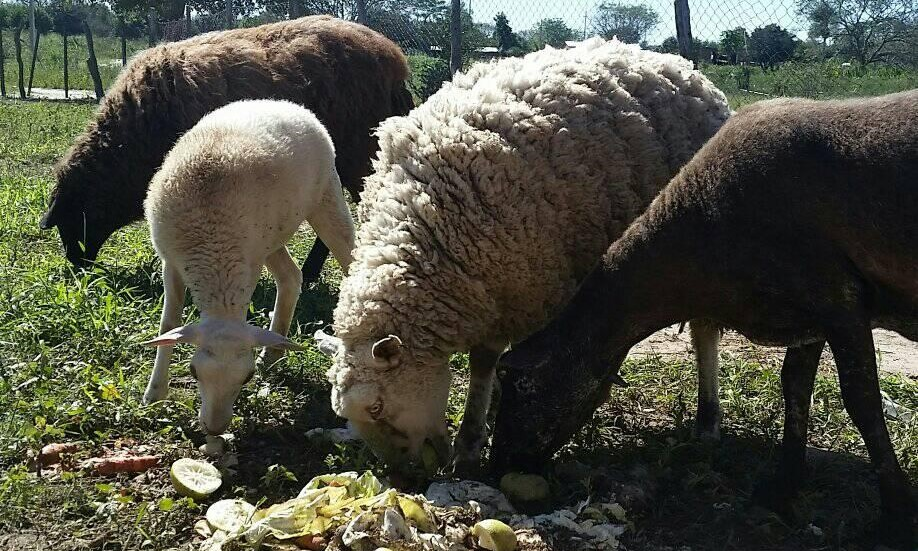
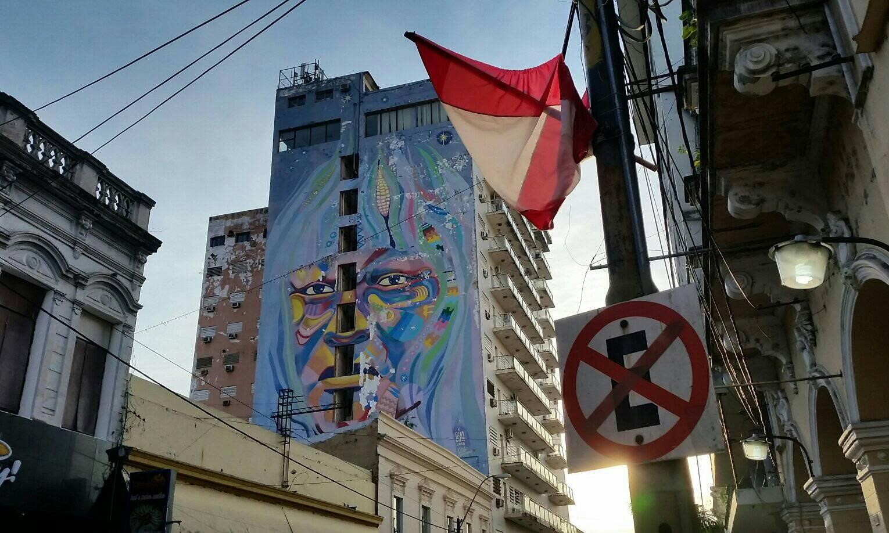
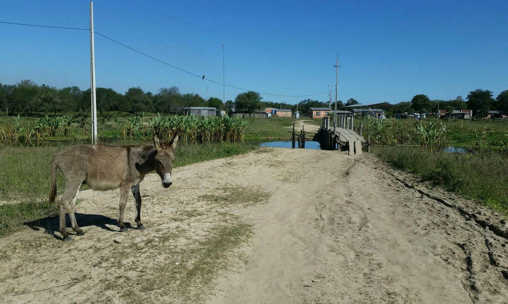
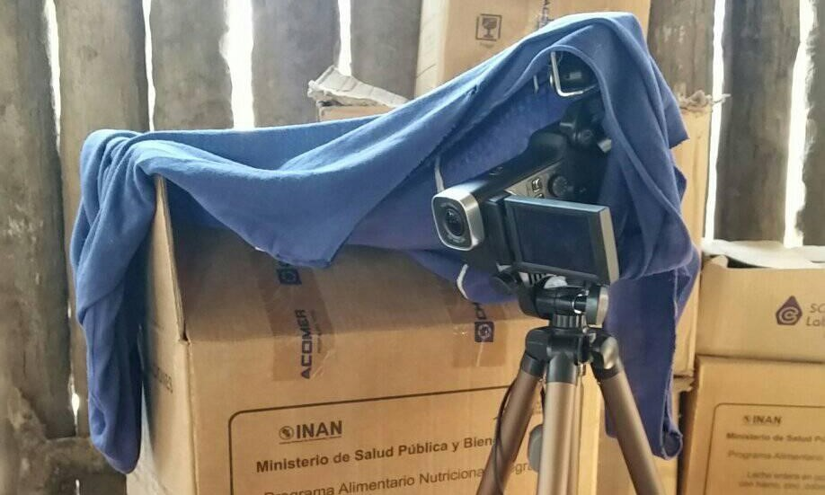
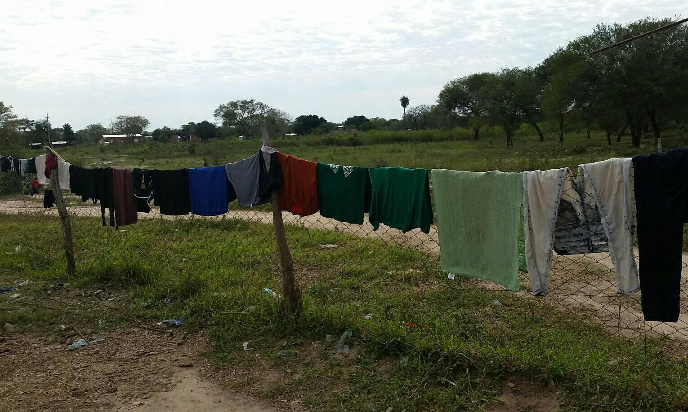
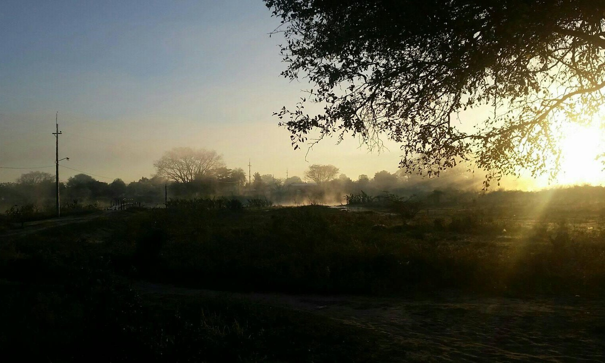
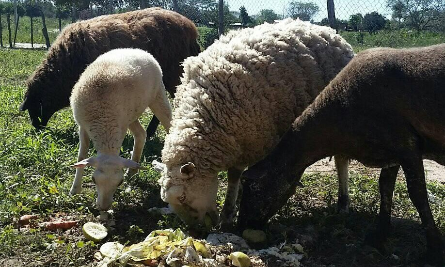

I remained in La Patria for just under a month. Most of my work was conducted in collaboration with two Angaité speakers, Eusebia Fernández and Eusebelina González.
We met for several hours each day, and they patiently struggled through my elementary Guaraní, working to translate Angaité vocabulary.
I also recorded numerous short narratives from speakers in a variety of different villages within La Patria, some of which have preliminary transcriptions thanks to the assistance of Dalmacio Flores.
These files are all archived and availalbe in
I used these materials to conduct a qualitative phonemic analysis of the consonant inventory of Angaité. Angaité utilizes contrastive consonants similar to its sister languages. It includes 14 phonemic consonants: /p t k q ʔ s ɬ h j w l m n ŋ/. The analysis also considers syllable structure, debating whether to treat postvocalic glides as part of the nucleus (resulting in diphthongs) or as codas (resulting in occasional complex codas). Ultimately, I decided based on cross-linguistic markedness and comparisons with descriptions of other Enlhet-Enenlhet languages to treat postvocalic glides as consonants. Angaité's maximal syllable is (C)V(C)(C), though CVCC syllables are extremely rare, and are only attested in a few tokens in the elicited daeta. The majority of syllables are CVC, followed by CV. Only very few syllables lack an onset, though voice quality variability complicates this picture. At the beginnings and ends of words, voice quality is frequently 'creaky'; it is unclear whether this creakiness is indicative of a phonemic glottal stop, or whether it is a word/phrase boundary effect. In the absence of evidence to the contrary, I treated this creak as a phonemic glottal stop, but further analysis of running speech, rather than words in isolation, is critical to fleshing out this argument. My ongoing study of Enenlhet vowels, including voice quality, will hopefully provide some insights into the relationship between voice quality, the consonant inventory (glottal stop) and syllable structure.
In addition to the FLAS provided through LLILAS Benson, this field pilot trip was supported by a Tinker Summer Research Grant as well as a Sherzer Fieldwork Grant.